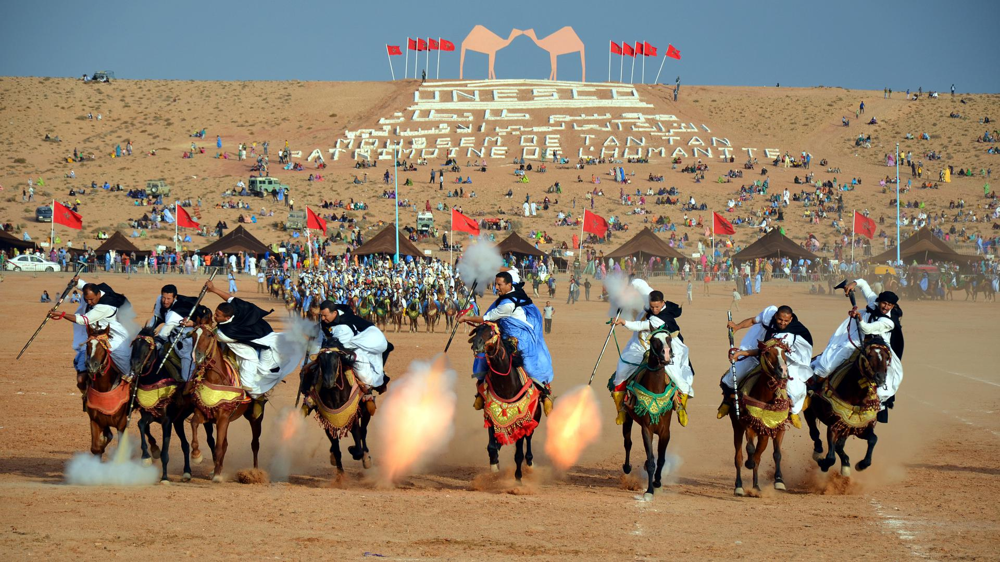
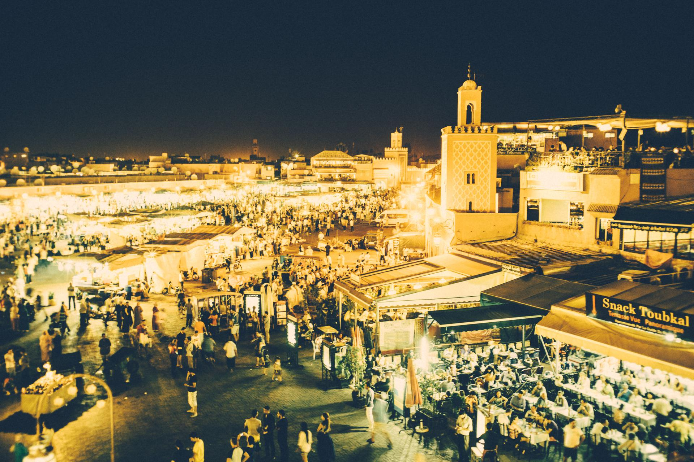
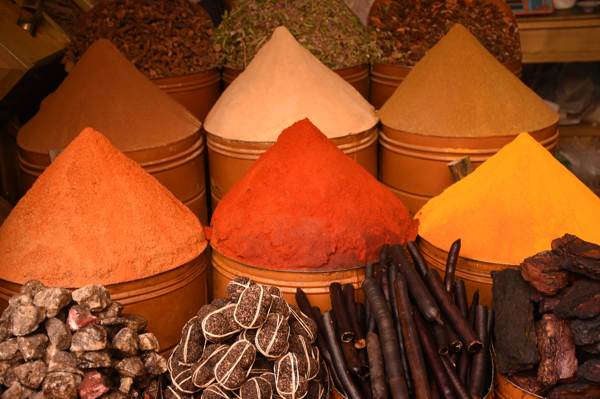
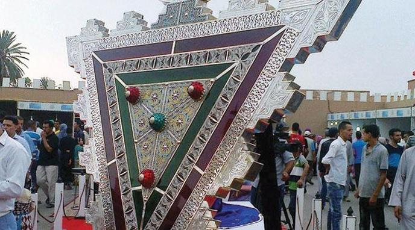

Le moussem de Tan Tan se déroule sur quelques jours au mois de Juin. Depuis 2008, l’événement est au classé Patrimoine immatériel mondial par l’Unesco. C’est l’occasion pour plus d’une trentaine de tribus nomades du Maroc de se retrouver. Il s’agit aussi
de perpétuer la culture Sahraouie, soit la culture de ces populations nomades vivant dans le Sahara occidental. Vous pourrez assister à des courses de chevaux et de dromadaires, aux rencontres musicales, chants et danses, à la présentation de
l’artisanat, des plantes médicinales, et autres aspects de la culture locale. Il faut dire qu'on ne peut que se laisser ensorceler par l'atmosphère qui règne ici, à la fois festive et authentique.

Festival des arts populaires à Marrakech
Créé en 1960 par Sa Majesté Le Roi Mohammed V, ce festival folklorique est le plus ancien des festivals du Maroc. Au mois de Juillet, les artisans, les conteurs, les chanteurs et les danseurs venant de tout le Maroc s’installent dans les rues de Marrakech
! Ces danses et ces chants correspondent à des moments importants de la vie religieuse ou rurale, l’objectif étant de maintenir vivante cette culture traditionnelle. J'invite les voyageurs à déambuler dans la médina ou à la Ménara, c’est là que
les troupes se produisent, notamment le soir. Si vous voyagez à Marrakech pendant le festival, c’est immanquable !

Moussem des fiançailles à Imilchil
Je vous propose de partir à la découverte d’un événement plutôt surprenant, dans un décor montagneux et dans une zone isolée du Maroc dans les grands espaces sauvages du Moyen Atlas. Le moussem d’Imilchil est la grande fête de la tribu berbère Ait Haddidou
qui se réunit chaque année à la fin des récoltes (en Septembre) au marabout de Sidi Ahmed Oulmaghni, le protecteur des bergers et des troupeaux. Ce sont 30 000 nomades qui prennent place et installent un village de tentes berbères. C’est l’occasion
de prier le saint marabout, de faire leurs achats, se retrouver, et faire la fête. Vous y verrez une immense foire aux bestiaux, des marchands ambulants, les chants et les danses des Ait Hadidous et les célébrations des mariages… De quoi vous
dépayser !

La ville de Tiznit accueille le Festival de l'Argent organisé par l'Association Timizar Argent, en partenariat avec le Ministère de l'Intérieur, le Ministère de l'Artisanat, de l'Economie Sociale et Solidaire, la destination Souss Massa, et les conseils
collectifs et régionaux de Tiznit et la Chambre de l'Artisanat de la région, pendant la période du 19 au 23 juillet de chaque année
